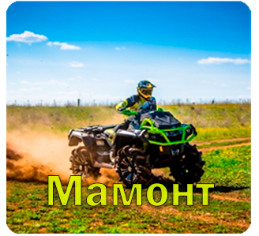

Мамонт

120.000 рублей
Квадроцикл "Мамонт" - это мощное и универсальное средство передвижения,
предназначенное для различных территорий и условий.
Вот его основные характеристики и особенности:
1. Мощный двигатель: Квадроцикл "Мамонт" оборудован
мощным бензиновым двигателем, который обеспечивает высокую производительность
и позволяет преодолевать различные типы местности.
2. Четыре колеса: Этот квадроцикл имеет четыре колеса,
что обеспечивает стабильность и управляемость на дорогах,
вне дорог и даже в сложных условиях.
3. Прочная рама: "Мамонт" имеет прочную и надежную раму,
что делает его идеальным для путешествий по неровным местностям
и для перевозки грузов.
4. Удобство и комфорт: Квадроцикл оборудован комфортабельным сиденьем и рулем,
что обеспечивает удобство при долгих поездках.
5. Возможности для грузоперевозок: "Мамонт" может быть оснащен специальными
багажными отсеками или прицепами для перевозки грузов,
что делает его полезным в сельском хозяйстве и на стройплощадках.
6. Подходит для развлечений: Этот квадроцикл также популярен среди
любителей активного отдыха и экстремальных видов спорта,
так как способен преодолевать сложные препятствия и территории.
7. Долговечность: "Мамонт" изготовлен из качественных материалов
и оборудован надежными компонентами, что обеспечивает его долгий срок службы.
Этот квадроцикл представляет собой универсальное транспортное средство,
которое можно использовать как для повседневных задач, так и для активного отдыха на природе.